Event-related
- [dev1026] Voidwatch: The Second Chapter
- This version update featuers a new installment of the Voidwatch system. Players may now battle Voidwalkers in the following two jurisdictions:
-
- Players who have completed up to stage four of the San d’Oria/Bastok/Windurst Voidwatch missions and seen the corresponding cutscene may join the operation by speaking to one of the Voidwatch officers stationed in the three nations.
- 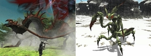
- Players level 75 and above who possess an Adventurer's Certificate may join the operation by speaking to the NPC Kieran in Norg (I-8).
- *The Zilart Voidwatch operation will be handled by special NPCs in place of the standard Voidwatch Officers.
- 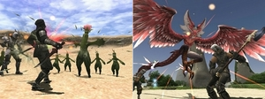
- The glossary of game terms on the official homepage has been updated with the latest Voidwatch terminology.
- 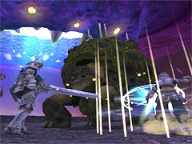
- New upper-tier walks have been added.
- The cutscene when receiving Kupofried's medallion is now displayed only the first time.
- All PCs in a single battlefield will now form an allied group, similar to Campaign battles.
- The spawn delay for subsequent waves of monsters in each walk has been reduced.
- The linked enmity system has been revised.
- Characters who remain KO'd for 30 seconds will now automatically receive a Raise effect.
- Evaluation conditions have been revised.
- Loot will no longer by distributed by lots, but rather through a system in which highly-evaluated players will receive rewards in individual treasure caskets.
- Monsters will no longer drop items.
- New rewards have been added.
- The drop rate for coins has been increased.
- 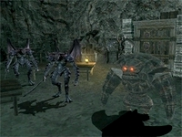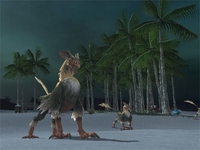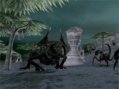
- Maps are now viewable in Dynamis areas.
- Dynamis maps may be purchased from the same Goblin NPCs who sell prismatic hourglasses.
- Goblin NPCs have ceased selling timeless hourglasses.
- Furthermore, perpetual hourglasses may no longer be used to access Dynamis areas.
- Goblin NPCs selling prismatic hourglasses will also buy back unneeded timeless hourglasses from the player.
- The vertical range of area effect spells and abilities has been reduced in certain areas.
- The range of the Benediction ability used by certain Dynamis monsters has been reduced.
- System messages indicating remaining Dynamis stay duration now appear more frequently.
- Dynamis-Valkurm/Buburimu/Qufim/Tavnazia Adjustments
- Conversion to Non-Reservable Areas
- The above areas are no longer reservable. For a full explanation of non-reservable Dynamis areas, please refer to the [dev1000] Dynamis Reborn! thread regarding changes implemented in the May 10, 2011 version update.
- Players will have the option to enable or disable support job restrictions upon entry.
- Support job restrictions may be disabled at any time by examining Somnial Thresholds.
- Support job restrictions cannot be enabled in this way.
- Drop locations for relic equipment, relic -1 equipment, accessories, and hydra equipment will remain unchanged.
- 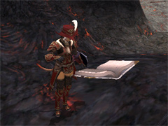
- The Boyahda Tree / Korroloka Tunnel / Kuftal Tunnel / Ve'Lugannon Palace / The Shrine of Ru'Avitau / Ifrit's Cauldron / Gustav Tunnel / Labyrinth of Onzozo
- *Treasure caskets have also been added to these areas.
- Additional Grounds Tomes have been placed in the following areas:
- Players will now be able to set training regimes to automatically repeat upon completion.
- Multiple new trials have been added.
- Rewards for retrieving the Astral Candescence or archaic mirrors, and for freeing hostages have been increased.
- [dev1021] Level Cap Increase
- The level cap for adventuring fellows has been raised from 85 to 90. A new fellow limit break quest has been added, the completion of which will unlock levels 86 and above.
- Players may now use the teleport service to teleport to any outpost for which they have completed a supply mission, regardless of their current nation affiliation.
- The synergy engineer and furnace formerly located in Bastok Markets (H-8) have been relocated to Bastok Markets (I-10).
Battle-related
- [dev1021] Level Cap Increase
- The maximum job level for player characters has been raised to 95. A new limit break quest called "Dormant Powers Dislodged" is now offered by the Nomad Moogle in Ru'Lude Gardens. The completion of it unlocks levels 91 and above.
- [dev1025] New BCNM Battlefields
- 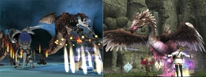
- New orbs are now obtainable from the Port Jeuno NPC Shami in exchange for High Kindred’s crests. Locations, entry requirements, and other conditions for the new battlefields will be as follows:
- *Bearclaw Pinnacle is accessible through the Uleguerand Range (J-9).
- [dev1024] Job Adjustments
- The following new job abilities have been added:
-
- Sacrosanctity (Lv.95, Recast time: 10 minutes, Duration: 1 minute)
- Enhances magic defense for party members within area of effect.
- Manawell (Lv.95, Recast time: 10 minutes, Duration: 1 minute)
- Eliminates the cost of the next magic spell the target casts.
- Spontaneity (Lv.95, Recast time: 10 minutes, Duration: 1 minute)
- Reduces casting time for the next magic spell the target casts.
- 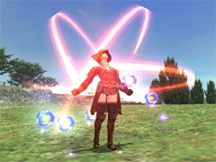
- Bully (Lv.93, Recast time: 3 minutes, Duration: 30 seconds)
- "Intimidates target.
- *When in this state and thief is set as your main job, Sneak Attack will succeed regardless of which direction the target is facing.
- Palisade (Lv.95, Recast time: 5 minutes, Duration: 1 minute)
- Increases chance of blocking with shield, and eliminates enmity loss.
-
- Channels damage taken into enhanced attack and magic attack.
- 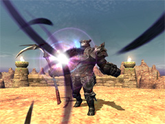
- Run Wild (Lv.93, Recast time: 15 minutes, Duration: 5 minutes)
- Your familiar will gain heightened powers, but will disappear when the effect expires.
- Marcato (Lv.93, Recast time: 10 minutes, Duration: 1 minute)
- Enhances the effect of your next song.
- Decoy Shot (Lv.95, Recast time: 5 minutes, Duration: 3 minutes)
- Diverts enmity when launching a ranged attack from behind a party member.
- *Decoy Shot activates when attacking a target that has enmity toward the ranger using it.
- Hagakure (Lv.95, Recast time: 3 minutes, Duration: 1 minute)
- Grants "Save TP" effect and a TP bonus to your next weapon skill.
- Issekigan (Lv.95, Recast time: 5 minutes, Duration: 1 minute)
- Increases chance of parrying, and gives an enmity bonus upon a successful parry attempt.
- Steady Wing (Lv.95, Recast time: 5 minutes, Duration: 3 minutes)
- Creates a barrier that temporarily absorbs a certain amount of damage dealt to your wyvern.
-
- Removes multiple status ailments from party members within area of effect.
- 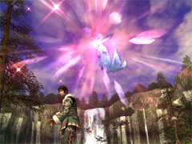
- Temporarily prevents all enemies within area of effect from acting.
-
- Allows access to additional blue magic spells.
- 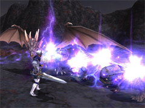
-
- Grants "Save TP" effect to party members within area of effect. Lucky Number: 5. Unlucky Number: 7.
- Companion's Roll (Lv.95)
- Grants "Regain" and "Regen" effects to pets of party members within area of effect. Lucky Number: 2. Unlucky Number: 10.
- Cooldown (Lv.95, Recast time: 5 minutes)
- Reduces the strain on your automaton.
- Ternary Flourish (Lv. 93, Recast Time: 2 Minutes 30 Seconds, Duration: 1 Minute)
- Allows you to deliver a threefold attack. Requires at least three finishing moves.
- [dev1024] The following job abilities, job traits, and spells have been adjusted:
- The recast times for the bard abilities Pianissimo and Tenuto have been shortened from fifteen seconds to five.
- Dragoons' wyverns now take less damage.
- The recast time for the corsair ability Double Up has been shortened from seven seconds to five.
- The effect for rolling 11 with the corsairs' Phantom Rolls has been altered.
- Puppetmasters' automatons now have access to the Subtle Blow trait.
- The effect duration for the scholar ability Tabula Rasa has been extended from one minute to three.
- The help text for the job trait Shield Masterynnow contains an explanation about the effect of this trait on casting interruption.
- The range of the white mage spell Holy has been increased.
- 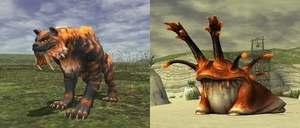
- [dev1024] The following spells, songs, and ninjutsu have been added:
-
-
- Deals light elemental damage to an enemy. Afflatus Solace: Increases spell potency based on the amount of HP you restore.
- 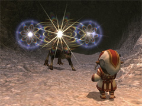
- Restores HP of all party members within area of effect.
- Enhances Strength for party members within area of effect.
- Enhances Strength.
- Grants the ability to occasionally attack twice.
- Consumes 20% of your maximum MP. Gradually restores target party member's HP and TP and increases attack speed.
-
- Deals lightning damage to an enemy.
- Deals ice damage to enemies within area of effect. Successive use enhances spell potency.
- Steals an enemy's beneficial status effects.
- Petrifies enemies within area of effect, preventing them from acting.
- Deals dark damage to an enemy. Successive use enhances spell potency.
- 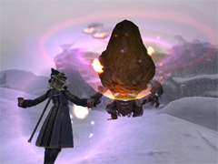
- "Consumes 20% of your maximum MP. Relentless dark damage slowly devours an enemy.
-
- Puts enemies within area of effect to sleep.
- Decreases an enemy's magic accuracy and increases its spellcasting time.
- Increases resistance against ice and sometimes nullifies ice damage for party members within area of effect.
-
- Uses the ninja tool, "ryuno." Increases your TP gain.
- [dev1024] The following existing spells are now available to additional jobs:
-
- [dev1024] Additional learnable blue magic spells have been added.
- 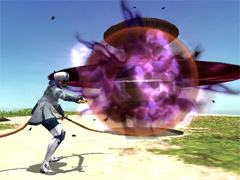
- [dev1022] The level and placement of certain monsters in the following areas have been adjusted:
- The Boyahda Tree / Korroloka Tunnel / Kuftal Tunnel / The Shrine of Ru'Avitau / Gustav Tunnel / Labyrinth of Onzozo
- The NMs Tinnin, Sarameya, and Tyger will now always drop the following items:
- The degree to which manticores' Riddle attack reduces maximum MP has been adjusted.
- The level of the NM Disaster Idol has been adjusted.
Item-related
- New items have been introduced.
- 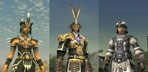
- New synthesis recipes have been introduced.
- New synergy recipes have been introduced.
<Rank: Artisan>
<Rank: Adept>
| Item
|
Required Crafting Skill
|
Ingredients
|
| Mekira-oto
|
Smithing
Leathercraft
Goldsmithing
|
Durium Sheet x 2, Giant Bird Plume, Scintillant Ingot, Osseus Plate
|
| Mekira Toshugai
|
Smithing
Leathercraft
Goldsmithing
|
Durium Sheet, Durium Chain x 2, Scintillant Ingot, Hydra Scale, Osseus Plate, Kaggen's Cuticle, Thunder Gem
|
| Nefer Khat
|
Clothcraft
Goldsmithing
Bonecraft
|
Shining Cloth, Durium Ingot, Silver Thread, Putrid Cuspid
|
| Nefer Kalasiris
|
Clothcraft
Goldsmithing
Bonecraft
|
Shining Cloth x 2, Durium Ingot x 2, Silver Thread, Putrid Cuspid, Akvan's Pennon, Light Gem
|
| Ocelomeh Headpiece
|
Clothcraft
Bonecraft
|
Giant Bird Plume x 2, Khimaira Mane, Twill Damask, Whetted Molar
|
| Ocelomeh Harness
|
Leathercraft
Clothcraft
Smithing
|
Giant Bird Plume x 2, Cerber. Leather|Cerberus Leather x 2, Tin Ingot, Whetted Molar, Pil's Tuille, Flame Gem
|
| Cloudy Wheat Broth
|
Cooking
|
San d'Orian Flour, Imperial Flour, Coriander, Distilled Water
|
|
- A new ninja tool, the Ryuno, has been added along with its corresponding toolbag.
- [dev1027] The stack size for the following items has been changed from 1 to 12:
- [dev1027] The stack size for the following items has been changed from 12 to 99:
- [dev1028] Additional exclusive items have been made deliverable to player characters within the same account.
- [dev1028] The following exclusive items are no longer deliverable within the same account:
- [dev1028] The list of undeliverable exclusive items has been updated.
- Habanero is now sold by merchants dealing in Tavnazian regional goods. Furthermore, the item is no longer exclusive, and may now be put up for auction.
- The following costume items can now be used in the field:
- The following items have been made storable with the porter moogle service:
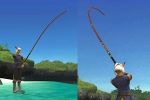
- Some of the items requested by guildworkers' union representatives have changed.
System-related
- The list of blue magic spells can now be sorted by elemental type.
- The NPC Pattel-Bacchel has been introduced to Port Windurst (C-8) to teach adventurers about fishing fatigue.
Resolved Issues
- The following issues have been corrected:
- The issue where getting hit by the Ahriman enemy ability Blind eye did not result in being blinded.
- The issue where the effects for Sleep II and Sleepga II would not display correctly when using them on roc enemies.
- The issue where ranged attacks from the Newton Movalpolos enemy Goblin Marksman gave off a different sound effect than intended.
- The issue where the log message for the ability Blood Rage would not display properly with Boost in effect.
- The issue where absorbing ranged physical damage would be displayed in the log with the same color as damage dealt.
- *This issue also affected such abilities as Barrage and Sange.
- The issue where the effect of the bard merit point enhancement Lullaby Recast was not applied to Foe Lullaby II.
- The issue where Grounds Tomes were not revealed via the beastmaster or ranger job trait Wide Scan.
- The issue where pet commands would not work properly under certain circumstances when one's main job was set to beastmaster and one's support job was set to puppetmaster.
- The issue where the log message would not display correctly when making ranged attacks using the ranger abilities Flashy Shot or Stealth Shot.
- The issue where the log message for the puppetmaster ability Tactical Switch would not display immediately.
- The issue where the weapon skills Mystic Boon and Spirit Taker would not convert damage dealt into MP under certain circumstances.
- The issue where the weapon skill Myrkr would not remove the status ailments Elegy and Requiem.
- The issue where, under certain circumstances, the Voidwatch NM Murk-veined Baneberry's name would not display, preventing the monster from being targeted.
- The issue where an incorrect weakness would be displayed if a weakness hint for a Voidwatch enemy was given at the same time the enemy was claimed.
- The issue where the Treasure Hunter bonus did not apply to white alignment at the end of battle.
- The issue where NPC descriptions of the key item Atmacite of Onslaught (Lv.5) erroneously stated it gave +3 to DEX, instead of the correct +2.
- The issue where exploiting the weaknesses of samurai-type enemies in Dynamis would occasionally cause them to attack as if they were under the effect of Meikyo Shisui.
- The issue where exploiting the weaknesses of ninja-type enemies in Dynamis would occasionally cause them to stop attacking under certain circumstances.
- The issue where certain enemies in Apollyon SE would take damage from attack types that should not damage them.
- The issue in Abyssea areas where the names of players striking enemy weaknesses were not displayed properly under certain circumstances.
- The issue in Abyssea areas where striking multiple enemy weaknesses simultaneously would occasionally result in PC names and the corresponding weakpoint effects not matching correctly.
- The issue where some destinations occasionally failed to display when requesting teleportation to a cavernous maw from Abyssea NPCs.
- The issue where the Abyssea - La Theine enemy Black Merino would spawn outside of its natural habitat.
- The issue where the graphics for the Abyssea - Konschtat enemies Alkonost and Hippalectyon would not display if the Chains of Promathia expansion was not installed.
- The issue where status ailments received from the Abyssea - Vunkerl enemy Bukhis's Ruinous Scythe attack would continue to afflict PCs even after being KO'd and revived.
- The issue where the Abyssea - Uleguerand enemy Impervious Chariot would stop moving under certain circumstances.
- The issue where familiars called to a Bastion battle would not be dealt with properly after the session ended.
- The issue where drop rates for the following items were lower than intended:
- Tiger King Hide / Sisyphus Fragment / Jaculus Wing / Goblin Gunpowder
- Certain staff trials were deemed to require additional testing time and thus have been temporarily postponed.
They will be implemented on the test server within the coming days and will be featured in a forthcoming version update.
|

{kind=link}
{kind=link}
{kind=link}
{kind=link}
{kind=link}
{kind=link}
{kind=link}
{kind=link}
{kind=link}
{kind=link}
{kind=link}
{kind=link}
{kind=link}
{kind=link}
{kind=link}
{kind=link}
{kind=link}
{kind=link}